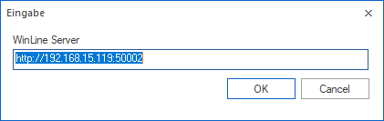
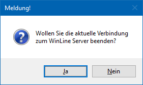

Durch Anklicken des Registers "System Info" im Fenster "System Information" erhält man eine Übersicht über den gegenwärtigen Zustand verschiedenster Systemparameter.

Folgende Informationen sind u.a. ersichtlich:
Ø Version
Es wird die Programm- und Datenstands-Version angezeigt.
Ø Benutzer / Zeit
Hier wird Auskunft über den aktuellen Benutzer, sowie System- und Einlogdatum gegeben.
Ø Lizenz
In den Zeilen "Lizenz Name" bis "MWL Lizenzen" wird Auskunft über die eingespielte Lizenz gegeben.
Hinweis
Eine Echtlizenz kann im WinLine ADMN über "Datei - Lizenz eingeben" eingetragen werden. Zusätzlich ist ein Live-Abruf vom mesonic Lizenz-Server via Doppelklick möglich (Zeile "Lizenz Nummer"), wobei die ggfs. neuen Lizenzdaten nach einem Neustart der WinLine angezeigt werden.
Ø Systemumgebung
Über diverse Zeilen (u.a. "Programmverzeichnis" bis "Drucker") werden Informationen bezüglich der Hard- und Softwareumgebung (Pfade, Drucker, Treiber) angezeigt.
Ø Audit
In der Zeile "Anzahl Fehler im Audit" wird die Anzahl der Fehler im Audit angezeigt. Durch einen Doppelklick auf den Eintrag <<Doppelklick>> wird die Anzahl der Fehler im Audit neu errechnet. Erreicht die Anzahl der Auditeinträge die Größe von 5000, so wird man beim Start des Programms darauf hingewiesen. Im Zuge dessen kann das Protokoll auch gelöscht werden.
Hinweis
Die Anzahl der maximalen Einträge kann in den Einstellungen (WinLine START - Parameter - Einstellungen…) parametrisiert werden.
Ø WinLine Server
Um die Funktion des "Hintergrundprozesses" in der WinLine nutzen zu können, muss eine aktive Verbindung des Benutzers zum WinLine Server bestehen. Aus diesem Grund wird standardmäßig beim Einstieg in die WinLine die Verbindung zum WinLine Server geprüft und hergestellt.
Wenn die Verbindung erfolgreich hergestellt werden könnte, so wird die Server-Adresse und eine GUID im Infofeld "WinLine Server" angezeigt. Falls die Verbindung nicht hergestellt werden konnte, so erscheint die Meldung "failed to connect to ... " in diesem Feld.
Hinweis
Sollte die automatische Verbindung zum WinLine Server nicht gewünscht sein, so kann dieses in den Einstellungen (WinLine START - Parameter - Einstellungen… - Register "Admin" - Option "Automatisch mit WinLine Server…") deaktiviert werden.
Hinweis - Verbindung herstellen
Nachträglich kann eine Verbindung zu dem WinLine Server mit Hilfe des Buttons "mit WinLine Server verbinden" hergestellt werden. Hierbei sucht die WinLine nach bekannten WinLine Servern und versucht einen Connect für den aktuellen Benutzer.
Handelt es sich bei dem aktuellen Benutzer um einen Administrator, so kann eine Verbindung auch per Doppelklick auf die "WinLine Server"-Zeile hergestellt werden. Hierbei öffnet sich zunächst ein Eingabefenster, in welchem ein alternativer Server via IP-Adresse angegeben werden kann.

Hinweis - Verbindung beenden
Durch einen Doppelklick auf die "WinLine Server"-Zeile kann die Verbindung zum WinLine Server beendet werden, wobei dieses über die folgende Meldung bestätigt werden muss:

Dieser Vorgang ist z.B. dann notwendig, wenn für spezielle Aktionen (z.B. Jahresabschluss, Reorg etc.) exklusive Datenbankzugriffe benötigt werden. Wurde eine Verbindung beendet, so wird das auch entsprechend angezeigt ("No Session Thread").
Ø temporäre Dateien
In der Zeile "Temp-Verzeichnis" wird die Anzahl der temporären Dateien angezeigt. Durch einen Doppelklick auf den Eintrag <<Doppelklick>> werden diese gelöscht. Dabei werden auch die dmp- und dmp.trc-Dateien gelöscht, die nicht vom aktuellen Tagesdatum sind.
Hinweis
Das Löschen der Tabellen und Dateien wird im Auditprotokoll Funktionen protokolliert.
Ø Systemdateien
Im letzten Teil der Tabelle wird angezeigt, wo sich die Systemdateien (die für das Arbeiten mit der WinLine verantwortlich sind) befinden. Diese Information erstreckt sich über die Bereiche "Systemdateien", "Archivierung", "Bildschirmfenster, Formulare und Tabellen", "Mandantenunabhängige Daten", "Archivdaten", "Lohnverrechnungsdaten (Österreich)", "Lohnverrechnungsdaten (Deutschland)", "Power Reports", "Textrepositorium" und "Bildschirmrepositorium".